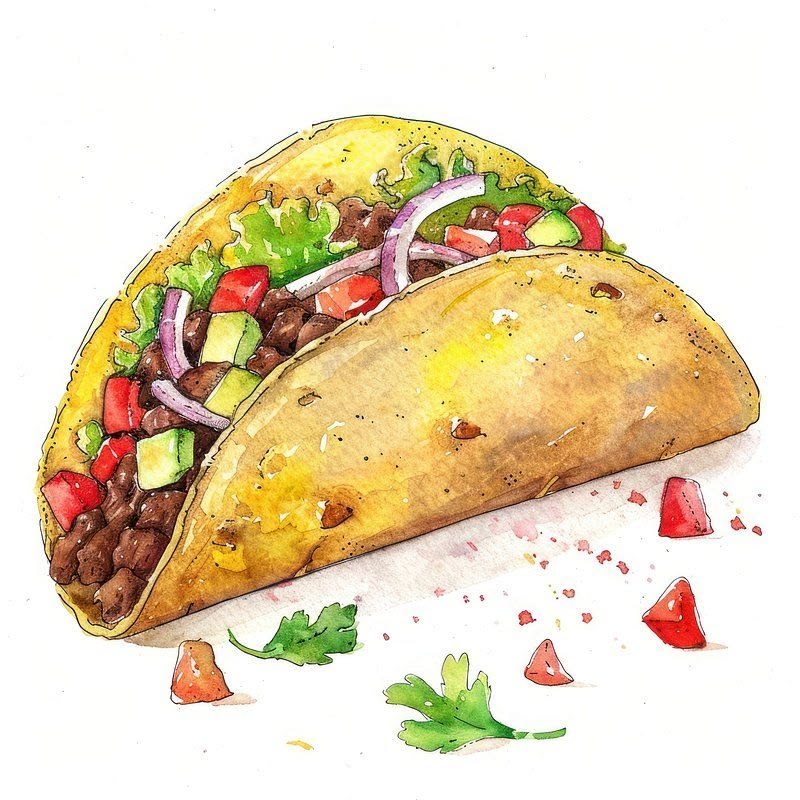

מתכונים ושילובים מומלצים
דף הבית
אודות
סוגי בצל
מתכונים
צור קשר
מפת האתר
דף הבית
> מתכונים
עם מה מומלץ לשלב?
טאקוס וטורטיות:
מוסיף חומציות נהדרת שמאזנת את המנה.
המבורגרים:
משדרג את המנה ומחליף את המלפפון החמוץ.
סלטים ירוקים:
מוסיף קראנצ'יות וצבע סגול מרהיב.
